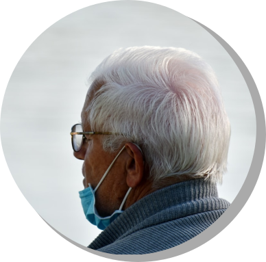
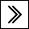
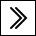

-

SilverImmunity -- Microsoft Jobhack Hackthon

SilverImmunity -- Microsoft Jobhack Hackthon
This is a second runner up group award project from Microsoft Jobhack Hackathon 2021. The project is combined AI technology, Speech Recognition, mobile application to build a programme to ensure elderly in Hong Kong can get assistance from NGO workers or individual volunteers. The project is demonstrated from two types of user ends, the elderly side and the volunteers' side.
back to top section

This is a research project about the water quality of Hudson River, inlcuding how the city's drainage system affect animals living in the Hudson River, or dependant on the Hudson River, including human ourselves. This research paper includes all the lab results I have collected in the whole semester, as well as some additional information and experiment result I have conducted for this project.
back to top section
This is the website of Computer Science Society at John Jay College of Criminal Justice. A community driven club with the aim of helping and providing Computer Science students with all the necessary skills to succeed in their career. We are a student let club organization that believes in helping Computer Science students succeed in the STEM field. We offer events that are aimed and designed to grow your understanding of tech related skills.
Click here to visit the Computer Science Society Website
back to top section
This is one of 30 projects in NYC Tech Talent Pipeline one month Web Development Training Program. I was one of the team leaders of this program. This particular project is about sharing food recipes from different places of the world. The winter web development training bootcamp was designed for the CUNY TTP Residency summer internship program (2022). The training program focuses on web development, including HTML, CSS, JavaScript, python, UX/UI Design, React, Django, etc.
back to top section

This Substitution Cipher Decoder can be used to analyse the frequencies of alphabets in ciphertext and decode it in frequencies analysis approach. The approach will not provide an accurate result. But the result can be intrepreted by human with considering english language grammar structure and spellings. There are two versions of this Substitution Cipher Decoder in C++ and Python.
Click here for Github Repository Link (C++)
Click here for Github Repository Link (Python)
back to top section
This is an on going passion project. Dot is a cross platform dating and friendship application for people with disabilities. We are currently working on the web application prototype and Android application prototype. The links are currently unavailable since we are still working on it. This application is different from the current disabled dating apps because we aim to create a disabled user friendly interface with accessibility features, such as theme changing feature for colour blind users and font size changing feature to better assist users.
back to top section